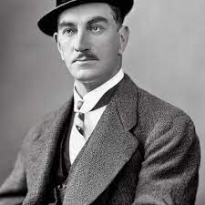
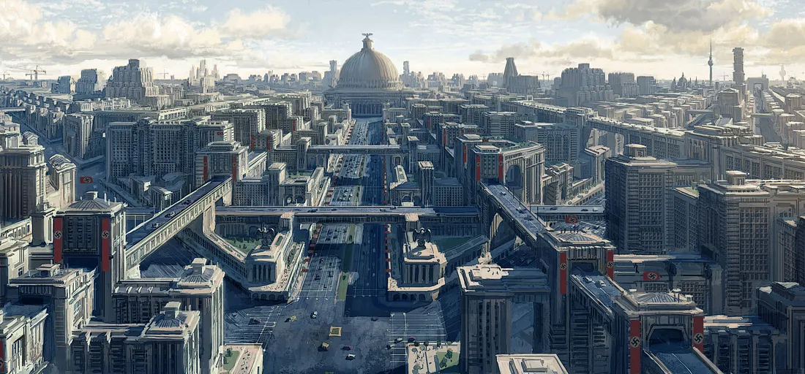
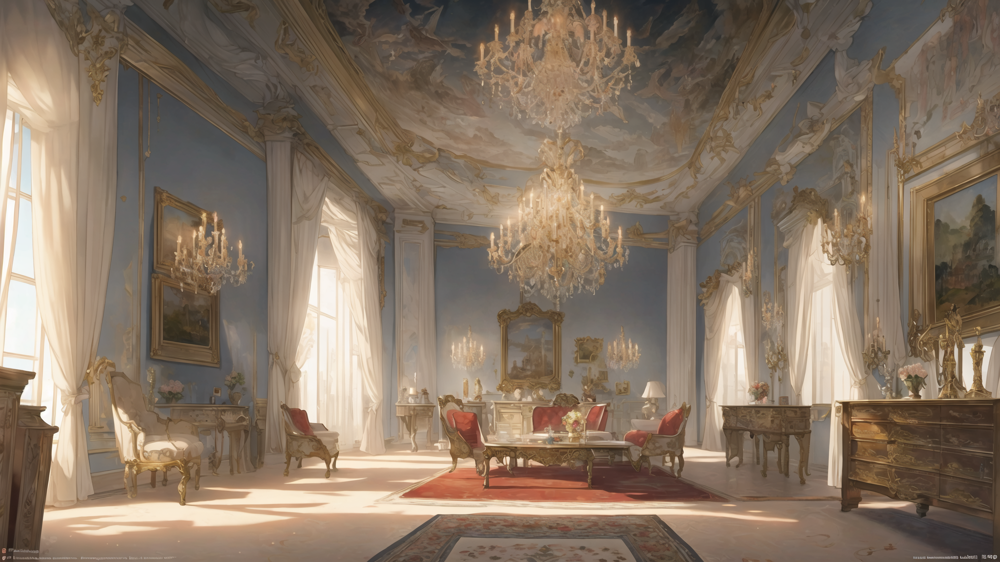
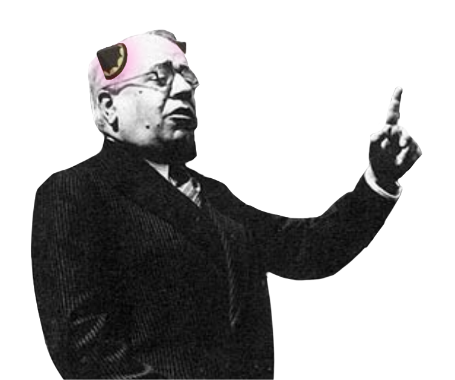

選択可能なキャラクター
名前: ラグナー・フォン・ラート
職業: 哀れみ深い紳士
効果: 他国との関係値の上昇効果 +25%
名前: オットー・ハーン
職業: 帝国の科学者
効果: 研究速度 +15%
名前: フンベルト・シェーンベルク
職業: 戦略的な補給改革者
効果: 毎ターンの補給物資 +10%

名前: レーオン・エーベルハルト
職業: 冷徹な兵站効率師
効果: 人員ひとりあたりの消費物資量 -15%
選択済み（上限: 2人）
- まだ選択されていません。


連合国の失策により、第二次世界大戦を勝利で終えたドイツは総統アドルフ・ヒトラーのもと、地球最強の国として君臨している。しかし戦争経済から脱せなかったことによる経済破綻は国を十年以上停滞させ、アーリア人の理想郷のために「劣等人種」を搾取・殺戮する構造はライヒの内側を憎しみで満たした。かつての戦友、日本とイタリアはもはや仲間ではない。我々は冷戦での優位性をつかむために月面基地を作る「プロジェクト・ルナ」へと希望を託した。大丈夫、ドイツの鷲はまだ飛べる。

ハワイに落ちた一発の原子爆弾は、アジアの新たな盟主を決めた。太平洋の覇権を獲得した日本は世界最大の海軍を持ち、強大な経済圏をアジアに築いている。しかし肥大化した財閥による独占体制は経済を停滞へと導き、共栄圏の諸国は日本の搾取に反乱の火種を起こしつつある。そして最大の敵アメリカはまだ諦めていない。フィリピン内戦が終わらないのは彼らの介入のせいだ。軍事技術の優位性を示すために月面基地を作る計画を実行に移す時が来た。大丈夫、まだ太陽は我々を照らしている。

我々は勝利した。
以前に読んだストーリーです。スキップしますか？


名前: ラグナー・フォン・ラート
職業: 哀れみ深い紳士
効果: 他国との関係値の上昇効果 +25%
名前: オットー・ハーン
職業: 帝国の科学者
効果: 研究速度 +15%
名前: フンベルト・シェーンベルク
職業: 戦略的な補給改革者
効果: 毎ターンの補給物資 +10%

名前: レーオン・エーベルハルト
職業: 冷徹な兵站効率師
効果: 人員ひとりあたりの消費物資量 -15%
厳しい月面環境での生存と技術開発が求められる
この文章は表示されません
この文章は表示されません
この文章は表示されません
検知しました: ゲームシステム - 初見
この動画で説明しています。1分程度の動画です。ほんとうはこのサイト内で説明したかったのですが、ゲームが複雑になって説明が難しくなったため、外部サイトを使いました。すいません。
二度とチュートリアル画面を表示しない
厳しい月面環境での生存と技術開発が求められる
月面の未知の地域を探査し、貴重な資源を発見する
月面生存に必要な革新的な技術の開発に注力する
現在の基地インフラを強化し、居住環境を改善する
TYPE1
TYPE2